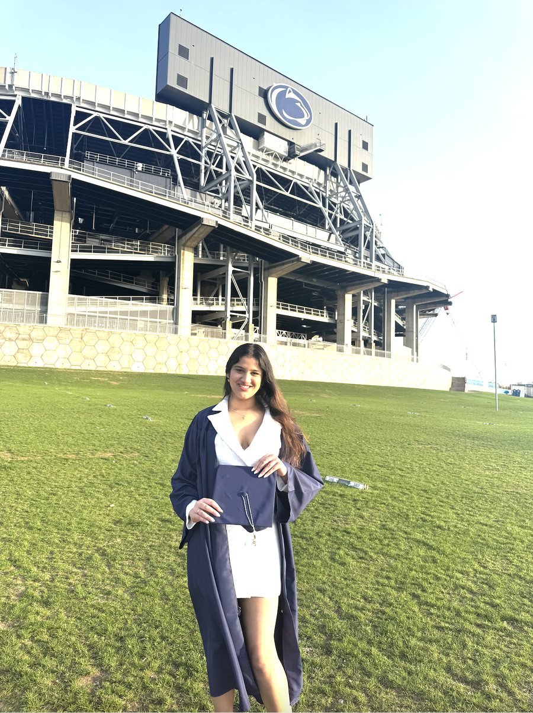

About me
Data scientist, master's student, former learning assistant, occasional boxer.

I like the part of data science where you find out whether a model actually works: what it gets right, where it fails, and why.
I studied Computational Data Science at Penn State, with minors in Mathematics and Statistics, and graduated in May 2025. In August 2026 I moved to Sweden to start a master's in Data Science at Uppsala University, specialising in Machine Learning and Statistics.
My work so far spans NLP, computer vision for autonomous vehicles, robust regression research, generative AI and business analytics. I've also spent a lot of time teaching: as a learning assistant for programming and maths courses, and as a Python facilitator for the Women in Engineering Program.
Away from the keyboard I box, cook and travel.